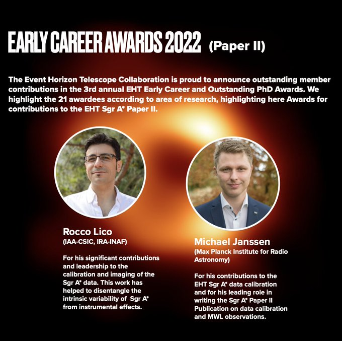
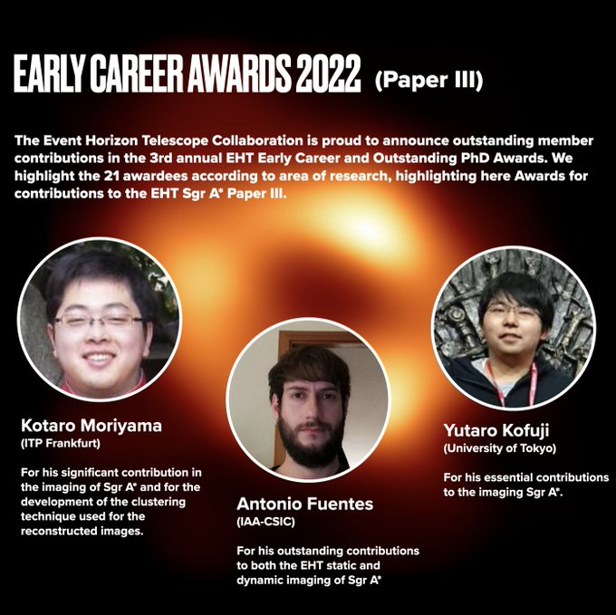
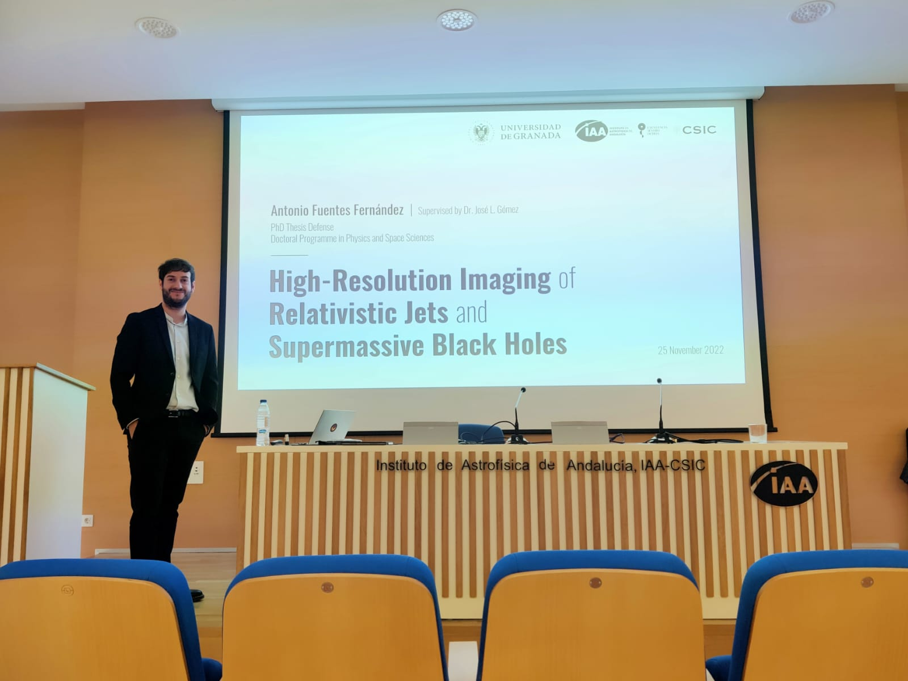
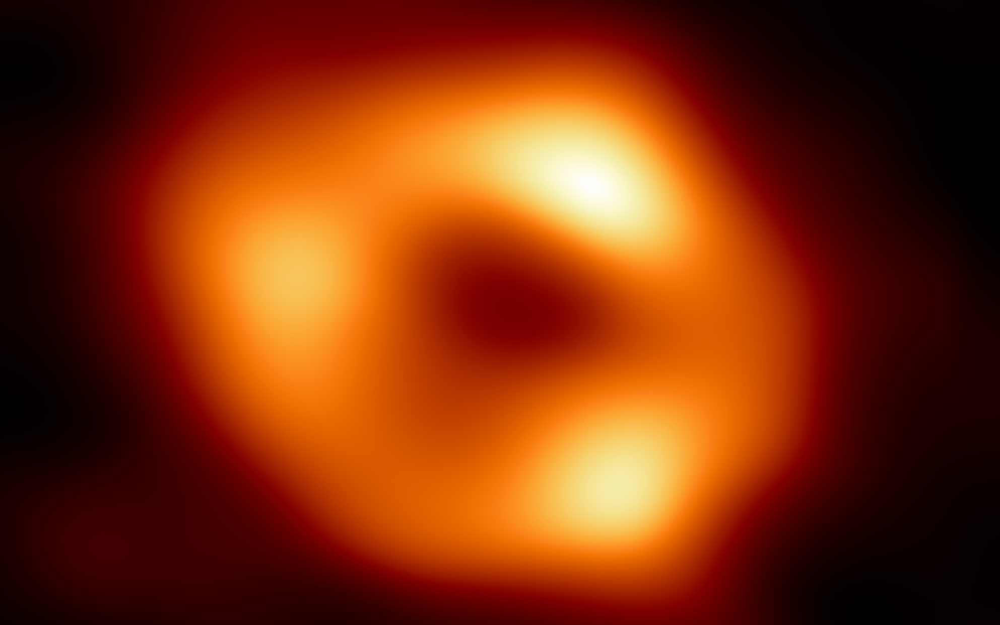

17 December 2022
Congratulations to Dr. Rocco Lico for getting the EHT Early Career Award 2022 for his significant contributions and leadership to the calibration and imaging of SgrA* data! Read more about this here. 
15 December 2022
Congratulations to Dr. Antonio Fuentes for getting the EHT Early Career Award 2022 for his outstanding contributions to both the EHT static and dynamic imaging of SgrA*! Read more about this here. 
25 November 2022
A huge congratulations to Antonio on becoming Dr. Antonio Fuentes! 
12 May 2022
We finally have the first look at our Milky Way black hole, Sagittarius A*. Our group played a leading role in the imaging process! Read more about this here. 
28 April 2022
Press conference at CSIC Headquaters in Madrid on groundbreaking Milky Way results from the Event Horizon Telescope Collaboration. More about in the tweet by CSIC here.
23 March 2022
First ngEHT face-to-face meeting is happening in Granada between 22-25 June 2022! Register for the meeting here.
23 March 2022
Finally after two years, EHT face-to-face meeting is happening in Granada between 19-22 June 2022!